SEM: Political Democracy
keywords SEM, structural equations model, lavaan
Draft version, mistakes may be around
This example shows a simple structural equation model using a
classical dataset from Bollen (Bollen
1989). This example can be found also in lavaal website, so the
user can compare results and get information for lavaan
tutorials.
We show input for SEMLj
interactive sub-module. For SEMLj syntax sub-module one just
paste the lavaan syntax and gets the same results of the
interactive module.
Research data
The dataset contains various measures of political democracy and industrialization in developing countries. For what concerns us, observed variables \(y1\) to \(y4\) refer to democracy indicator in 1960, observed variables \(y5\) to \(y8\) refer to democracy indicator in 1965, whereas indicators \(x1\) to \(x3\) are indistrialization indicators in 1960.
The model we want to estimate is basically a mediation model in which (latent) indistrialization level in 1960 influences (latent) democracy in 1960, which in turn influences (latent) democracy in 1965.
The path diagram should be the following.
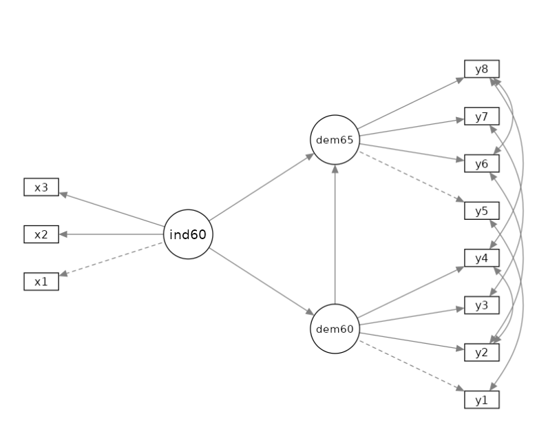
It is worth noticing that this model requires the latent relations we mentioned, and some correlations between observed variables. In particular, we want the following pairs of observed variables to be correlated: \(r(y1,y5)\), \(r(y2,y4)\), \(r(y2,y6)\), \(r(y3,y7)\),\(r(y4,y8)\), and \(r(y6,y8)\). Those are correlations among residuals of the observed variables, after removing their loadings on the latent variables. In factor analysis terms, the correlations among uniquenesses.
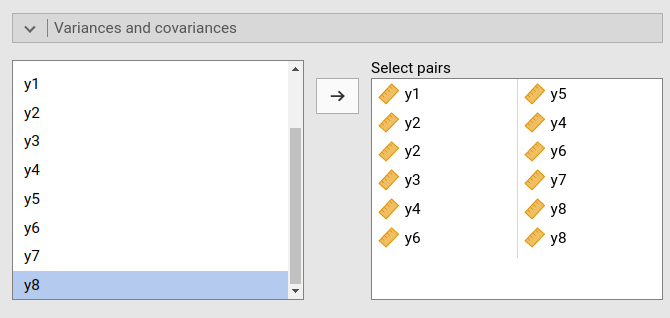
Model Input
We need to define the three latent variables ind60,
dem60, and dem65, each measured with the
corresponding observed variables.
For each latent variable, we define its name in place of “Endogenous 1”, “Endogenous 2” etc, and put the observed variables in the corresponding field.
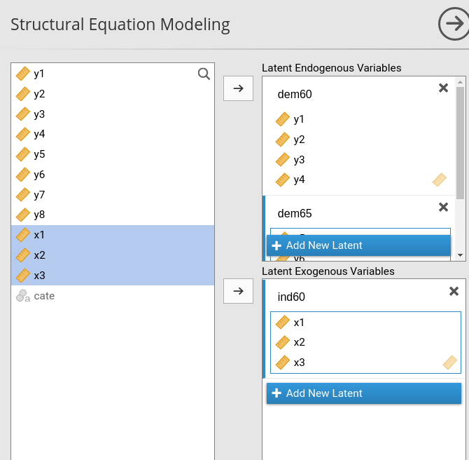
In details, we have the variables role panels defined as follows:
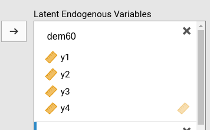 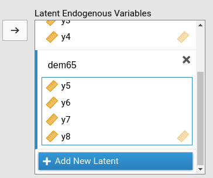 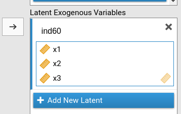
When we set the variables like we did, SEMLj knows our model has three latent variables, two endogenuous and one exogenous, and it knows what are the indicators of each latent variable.
We now need to specify the relationships between variables.
dem60 is predicted by ind60, and
dem65 is predicted by ind60 and
dem60. We declare that in the Endogenous models.
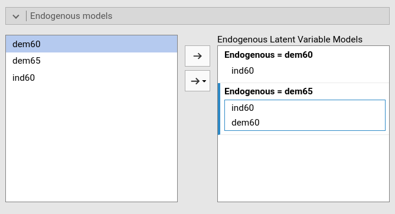
If we run this model like this, we would obtain the following structural model.
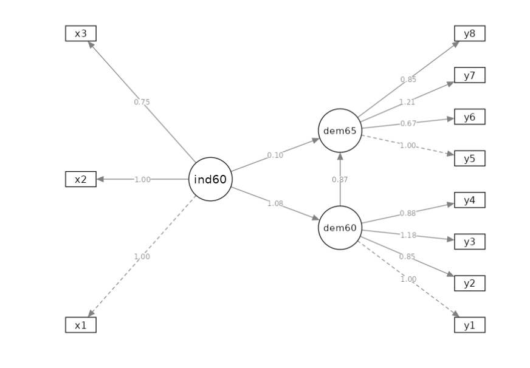
We can notice that this model, as compared with the intented model seen before, lacks the correlations between the observed variables. We can easily free them (meaning estimate them), in the Variances and covariances panel. We select the pairs of variables we wants to be correlated.
Because we want to see the path diagram of the model, we ask for the path diagram in the Path Diagram panel.
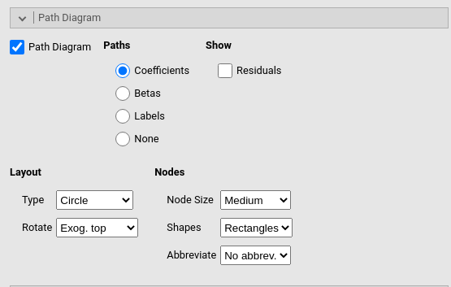
Output
Path diagram
We check the path diagram to be sure we set the model as we intended, and we did.
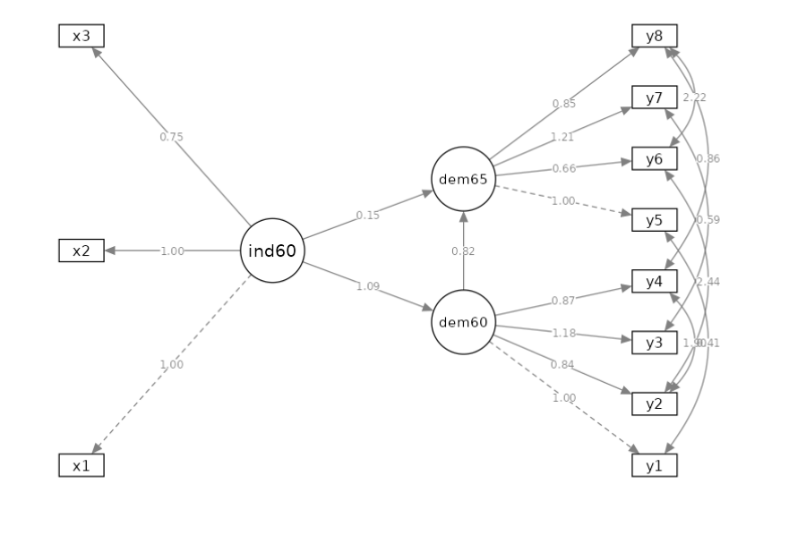
For now on, we discuss the output tables in the order they appear in the output.
Model info
Here we find general informations about the model.
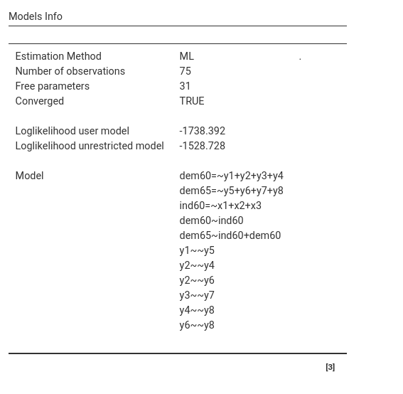
We can see that we have 75 observations, 42 free (estimated) parameters (including the intercepts), and that the model converged. We find the model likelihood for the user model and the unrestricted one, and the syntax we input (better check it’s right). The likelihood computations are usefull for advanced models comparisons, we can ignore them in this example.
Overall Tests
Here we find inferential tests regarding the whole model.
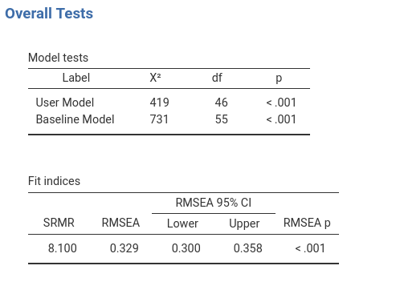
To interpret the Fit indices table, I’d
suggest to use David Kenny
website that has clear and detailed information, and the
lavaal website.
Here we comment on the Model tests: User Model \(\chi^2\) and Baseline Model \(\chi^2\) have very different interpretations. The smaller the first test, the better is our the model, the largest the second, the more relationships are in the data.
User Model \(\chi^2\) tests the null-hypothesis that our model is equivalent to a fully-saturated model (all possible paths are estimated). Recall that if we do not estimate a path (or a loading, or a residual correlation), we are setting it to zero. Thus, this test is basically an overall test of significance of the paths we set to zero. Are some of the paths we did not estimate (set to zero) different from zero? If the \(\chi^2\) is significant, at least some of them do not appear to be zero. Sample size, howevwer, may influence this test, so see David Kenny comments on this issue. Technically, the test tests the null-hypothesis that the covariances among observed variables implied by the model are equal to the observed covariances. This means: a large \(\chi^2\) (small p-value) indicates a mis-fit.
Baseline Model \(\chi^2\) tests the null-hypothesis that there are not relationships between each endogenous variable and any other variable in the model. Thus, this test is basically an overall test of significance that something is correlated among variables. Technically, the test tests the null-hypothesis that all paths specified or implied by the model are zero. This means: a larger \(\chi^2\) (small p-value) indicates more relationships to capture.
This reasoning may get more complicated by means and intercepts, but in our model they are free to be estimated, so they do not participate in the model fit tests.
(Technical) If you want to check out the meaning of
the baseline model, go to the SEMLj syntax submodule and estimate
this model. The baseline model \(\chi^2=731\) with 55 df. Re-estimate the
model with all parameters set to zero (i.e
ind60 =~ 0*x1 + 0*x2 + 0*x3, dem60 =~ 0*y1 + 0*y2 + 0*y3 + 0*y4)
and so forth. The user model \(\chi^2\) will be 731 when you set all
coefficients to zero.
Parameters Estimates
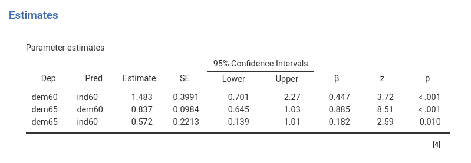
The Parameters Estimates table reports the regression coefficients linking the latent variables. The Estimate column reports the coefficients, the \(\beta\) column reports the standardized coefficients.
Measurement Model
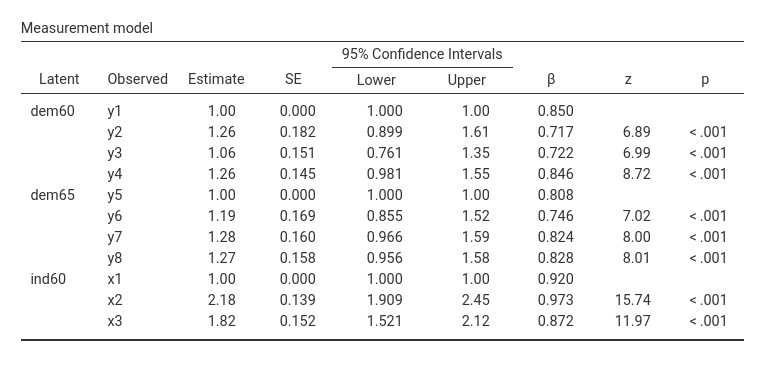
Here we can see the factor loading of each indicator to its latent variable. We can appreciate that the scale of the latent variables is set to the scale of the first indicator (Estimate=1). This is the default method to set the scale of the latent variables, and can be changed in the Parameters Options tab, fixing to 1 the residual variance of the latent variables.
Variances
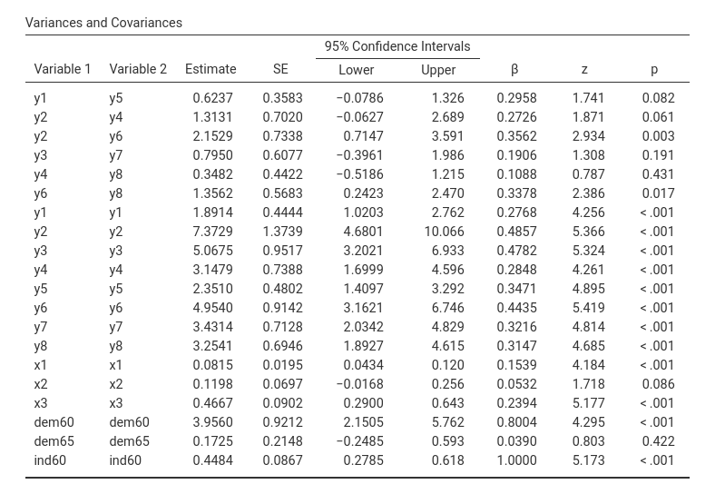
Here we can find the variances and covariances of the indicators and the latent variables.
Additional Output
In case more information about the model is required, the Output options provides options for that. There we select R-squared Endogenous to get the \(R^2\) of the model, as shown in the figure.
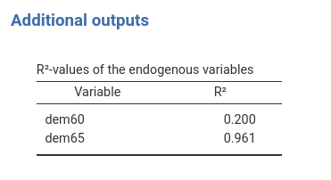
Examples
Some worked out practical examples can be found here
Examples
Some worked out practical examples can be found here
Comments?
Got comments, issues or spotted a bug? Please open an issue on SEMLj at github or send me an email